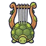
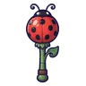
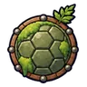
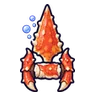
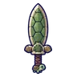

เต่าตะไคร่ขี้โมโห
มอนธาตุน้ำ Lv 14–24
เจอที่
| แมพ | โซน | Lv | ภูมิภาค |
|---|---|---|---|
| บึงกบลำธารใส | 16–24 | ป่ากองไฟ | |
| บึงกบลำธารใส | บึงบัวใหญ่ | 20–24 | ป่ากองไฟ |
| เขื่อนบีเวอร์ร้าง | 14–24 | ป่ากองไฟ | |
| เขื่อนบีเวอร์ร้าง | เขื่อนท่อนไม้ใหญ่ | 21–24 | ป่ากองไฟ |
| ดงกกท่วมหัว | 14–24 | ป่ากองไฟ | |
| ดงกกท่วมหัว | ซุ้มซ่อนล่าเป็ด | 21–24 | ป่ากองไฟ |
| กระท่อมรมควันปลาไหล | 14–24 | ป่ากองไฟ | |
| กระท่อมรมควันปลาไหล | โรงรมควันริมน้ำ | 21–24 | ป่ากองไฟ |
ค่าสถานะตามเลเวล
| Lv | HP | ATK | DEF | MDEF | EXP | Job |
|---|---|---|---|---|---|---|
| 14 | 2,366 | 31–46 | 13 | 1 | 26 | 20 |
| 19 | 2,936 | 39–58 | 18 | 1 | 32 | 24 |
| 24 | 2,961 | 40–61 | 23 | 2 | 39 | 29 |
ตีด้วยธาตุไหนดี
แรงขึ้น: ลม ×1.75
เบาลง: ไฟ ×0.5 น้ำ ×0.25
วัตถุดิบที่ดรอป
| ของ | โอกาส | |
|---|---|---|
| เกล็ดกระดองตะไคร่ | 55% | 1 ชิ้น (15% ได้ 2) |
อุปกรณ์ที่ดรอป (5)
| ของ | โอกาส |
|---|---|
 เครื่องดนตรีกระดองเต่า | 0.25% |
 กระบองเต่าทอง | 0.25% |
 โล่กระดองเต่าตะไคร่ | 0.25% |
 คาทาร์ขาปู | 0.12% |
 ดาบกระดองเต่า | 0.12% |
สกิล
ร่างแข็ง (Lv 25+) · ร่างแข็ง (Lv 60+) · ทุบพื้น (Lv 60+)